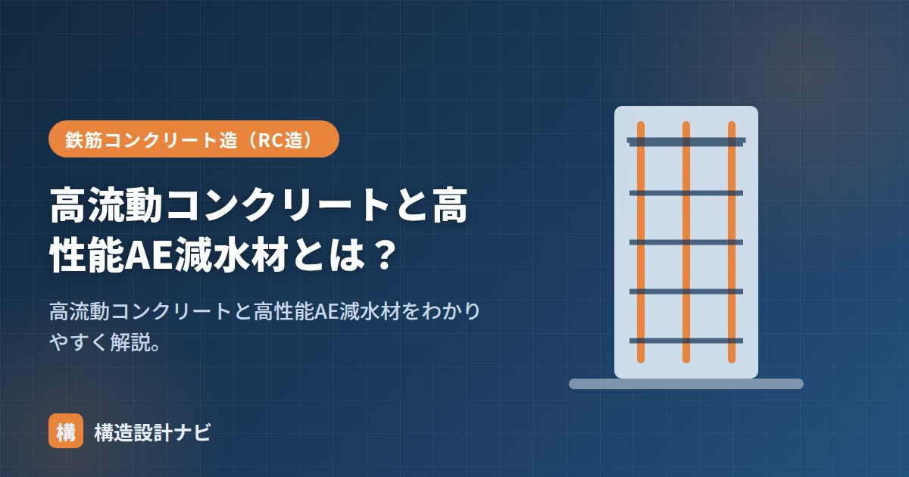

高流動コンクリートと高性能AE減水材とは？

高流動コンクリートとは、振動による締固めをしなくても、自らの流れで型枠のすみずみまで充填できる自己充填性を持つコンクリートのことです。これを実現する鍵となるのが高性能AE減水材という混和剤で、水を増やさずに流動性だけを高める働きを持ちます。過密配筋や複雑形状の型枠など、締固めが難しい条件で品質を安定させる手段として使われます。
- 高流動コンクリートは振動締固めなしで型枠に充填できる自己充填性を持つ
- 高性能AE減水材が単位水量を増やさず流動性を大きく高める
- 過密配筋や複雑形状の部材で施工の省力化・品質安定に役立つ
高流動コンクリートの特徴
- 自己充填性：バイブレータで締め固めなくても流れて充填する。
- 材料分離しにくい：よく流れるのに骨材が分離しないよう配合設計されている。
- 流動性はスランプフロー（広がりの直径、おおむね50〜65cm）で管理する。
高性能AE減水材の働き
高性能AE減水材は、単位水量を増やさずに流動性を大きく高める混和剤です。セメント粒子をばらけさせて滑りやすくする働きがあり、水を増やさないため強度・耐久性を保ったまま軟らかくできます。
流動性は本来「水を増やす」と上がりますが、それでは強度が落ちひび割れも増えます。高性能AE減水材なら水を増やさずに流動性だけ確保でき、高強度コンクリートにも欠かせません。
流動性が高まる仕組み
セメント粒子どうしは、練り混ぜ直後に静電気的な力で寄り集まり、フロック（塊）をつくって水や骨材の動きを妨げます。高性能AE減水材の分子はセメント粒子の表面に吸着し、粒子どうしが反発し合うようにする働きがあり、これによってフロックがほぐれ、閉じ込められていた水が流動に使われるようになります。結果として、加える水の量を増やさなくても、コンクリート全体としての流動性を大きく引き上げることができます。
用途
- 過密配筋の部材（鉄筋が密でバイブレータが入りにくい）。
- 複雑な形状・狭い型枠。
- 締固め不要で施工の省力化・品質安定を図りたい場合。
流動化コンクリートとの違い
後から流動化剤を加えて一時的に軟らかくする流動化コンクリートと異なり、高流動コンクリートは配合設計の段階から自己充填性を持たせており、分離しにくく流動性が安定しています。
施工管理上の注意
自己充填性があるといっても無条件に流れ広がるわけではなく、鉄筋間隔や型枠形状に応じた配合確認（充填性試験など）が欠かせません。また、材料分離を防ぐための配合設計が前提のため、現場で安易に加水すると分離やブリーディングが増え、本来の性能が発揮できなくなる点に注意が必要です。
「流動化コンクリート」との違い、「高強度コンクリート」、全体像は「コンクリートの種類7選」をどうぞ。
過密配筋の配筋検査に立ち会うと、鉄筋のあきが図面どおりでも、実際に打ち込んでみないと充填性はわからないと痛感します。私はスランプフローの管理値だけで安心せず、事前に模擬型枠での充填試験を勧め、現物で確認することを徹底しています。
高性能AE減水材が効く仕組み（図解）
「水を増やさずに軟らかくなる」のは、セメント粒子の状態が変わるためです。
施工管理上の注意
| 項目 | 内容 |
|---|---|
| スランプフローの管理 | 通常のスランプ試験ではなく、広がりの直径（50〜65cm程度）で管理する。円形に均一に広がるか、縁に骨材が偏らないかも確認する |
| 型枠の側圧 | 流動性が高いため、通常のコンクリートより型枠にかかる側圧が大きくなる。型枠の設計・締付けを強化する必要がある |
| 打込み速度 | 速すぎると気泡が抜けきらず、遅すぎると打重ね不良になる。適切な速度と打重ね時間の管理が必要 |
| コスト | 混和剤・粉体量が増えるため単価は高い。締固めの省力化・品質確保のメリットと比較して採用を判断する |
自己充填性があるとはいえ、どこからでも流し込んでよいわけではありません。1か所から流し込んで長距離を流すと、途中で粗骨材が取り残されて材料分離が生じます。流動距離の上限（一般に8〜10m程度）を守り、複数箇所から計画的に打ち込むことが品質確保の条件です。
よくある質問
Q1. 高流動コンクリートはどんな現場で使われますか？
鉄筋が密でバイブレーターが差し込めない部材、複雑な形状で締固めが困難な部位、免震層まわりのように振動を与えたくない部位などで採用されます。また、夜間工事や住宅密集地でバイブレーターの騒音を避けたい場合にも有効です。近年は労務不足への対応として、締固め作業を省力化する目的での採用も増えています。
Q2. 高流動コンクリートと流動化コンクリートの違いは何ですか？
設計段階から自己充填性を持たせているか、後から流動性を付与するかの違いです。高流動コンクリートは、粉体量や混和剤を含めた配合設計全体で自己充填性と材料分離抵抗性を両立させています。流動化コンクリートは、ベースとなるコンクリートに現場で流動化剤を添加して一時的に軟らかくするもので、時間の経過とともにスランプが戻ります。
Q3. 高性能AE減水材と普通のAE減水材は何が違いますか？
減水率が大きく異なります。普通のAE減水材の減水率が4〜10%程度なのに対し、高性能AE減水材は18%以上と大幅に水を減らせます。これは分子構造の違いによるもので、高性能AE減水材はセメント粒子の表面に立体的に吸着し、より強い分散効果を発揮します。高強度コンクリートや高流動コンクリートの実現に不可欠な材料です。
まとめ
- 高流動コンクリートは締固め不要の自己充填性を持つコンクリート。
- 高性能AE減水材は単位水量を増やさず流動性を高める混和剤。
- セメント粒子の分散作用によって、水を増やさずに流動性を確保する。
- 過密配筋・複雑形状に有効。流動化コンクリートより流動性が安定。